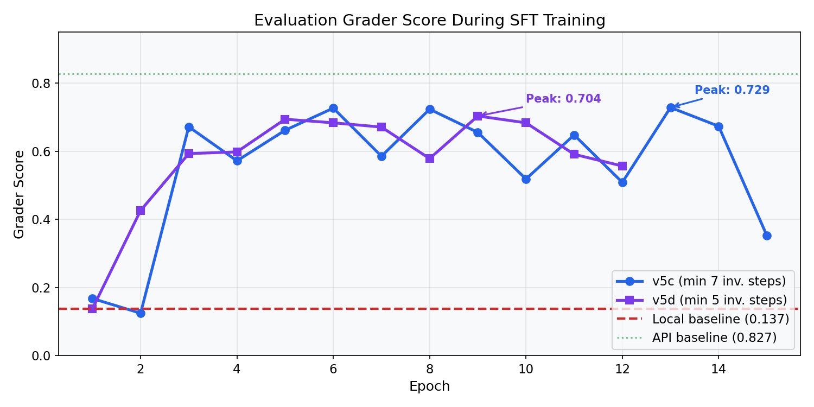
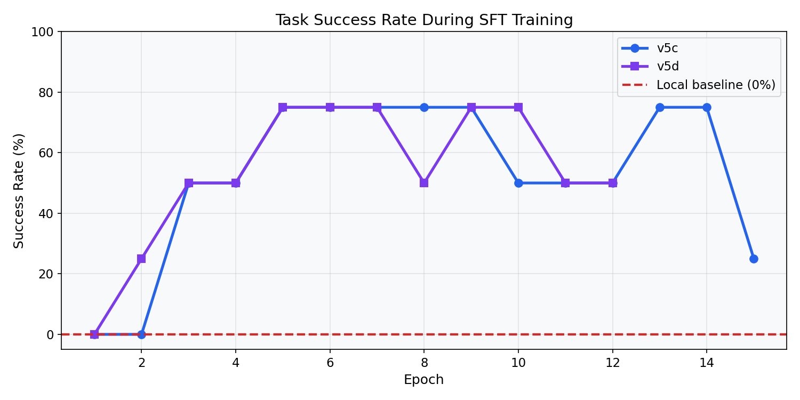
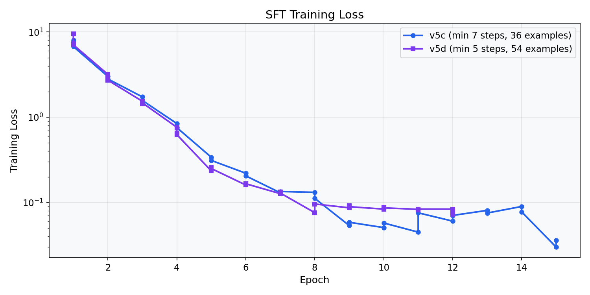
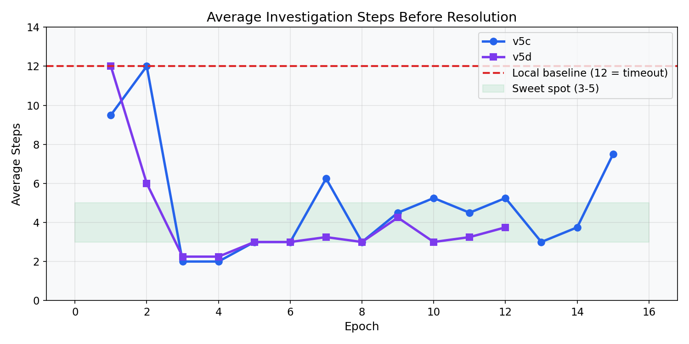

Local baseline score
-
This is a fast, static demo site for the project narrative. It shows baseline vs trained behavior, training curves, and links to all artifacts in Hugging Face.
Click through two representative tasks to compare baseline action loops vs trained resolution behavior.
Tends to investigate repeatedly and timeout at 12 steps.
Investigates quickly, then reaches `submit_final_resolution` in 3-5 steps.
Required judging evidence is embedded directly in-repo as static images for reproducible review.



